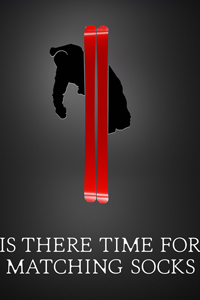
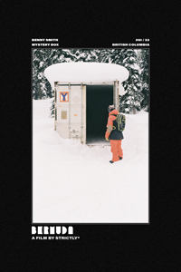
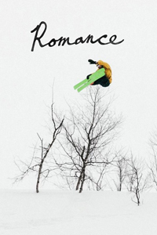
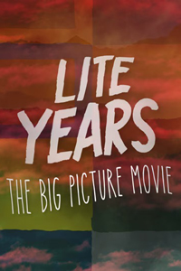
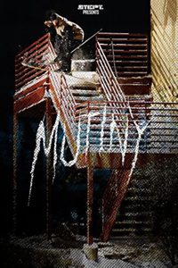

With a cast of bonafide industry legends and young up and comers, Crescendo is as well rounded as ski movies come. High consequence skiing, elite cinematography, and a soundtrack for the ages combine to reward viewers with an enhanced understanding of skiing at its highest level.

Is There Time For Matching Socks - The Bunch
Anyone who considers themself a die hard skier has to be slightly eccentric; The Bunch may be some of the most eccentric skiers in the world. Setting yourself apart in a saturated market is no small task, and this film is a case study in doing exactly that. This film awakens my childlike sense of wonder.

Bermuda - Strictly
Doing something dangerous with style is the ultimate form of art. Bermuda chronicles a group of skiers who are eager to earn recognition from a community of armchair critics with high expectations. From the chilly streets of Minnesota to the untouched Montana backcountry, this film shows what it’s like to “want it really, really bad”.

Romance - Level 1
Level 1 has been documenting the upper echelons of skiing since 1999. Romance stands as the final major production in a series of films that reshaped the entire sport. True to its name, Romance is a film about love; more specifically, the community’s everlasting love of skiing and how it brings people together.

Lite Years - The Big Picture
Lite Years offers viewers a chance to embark on a winter-long mission with some of the biggest names in backcountry skiing. Pristine snow conditions, jaw dropping scenery, and a perfectly paired soundtrack come together to evoke a feeling of euphoric awe amongst viewers. This movie will stand the test of time.

Mutiny - Stept Studios
Mutiny documents a group of young skiers as they embark on a mission around the US. Using big cities as their playground, the crew sacrifices their physical and mental health on the way to re-defining the limits of urban skiing. This film is raw, unfiltered, and exposes the type of mindset it takes to make a career out of street skiing.